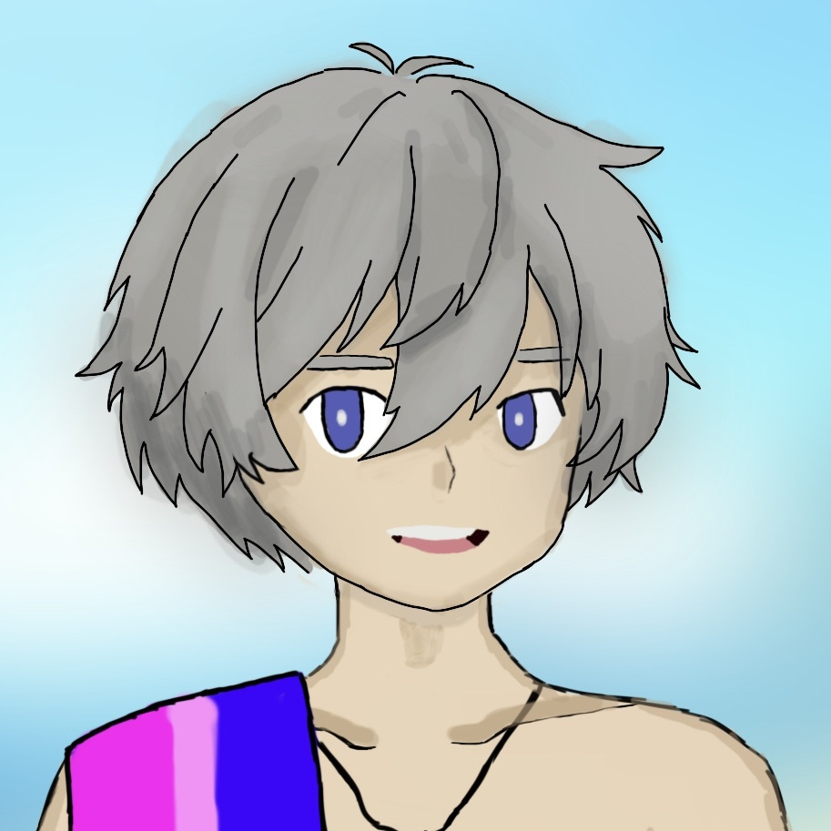
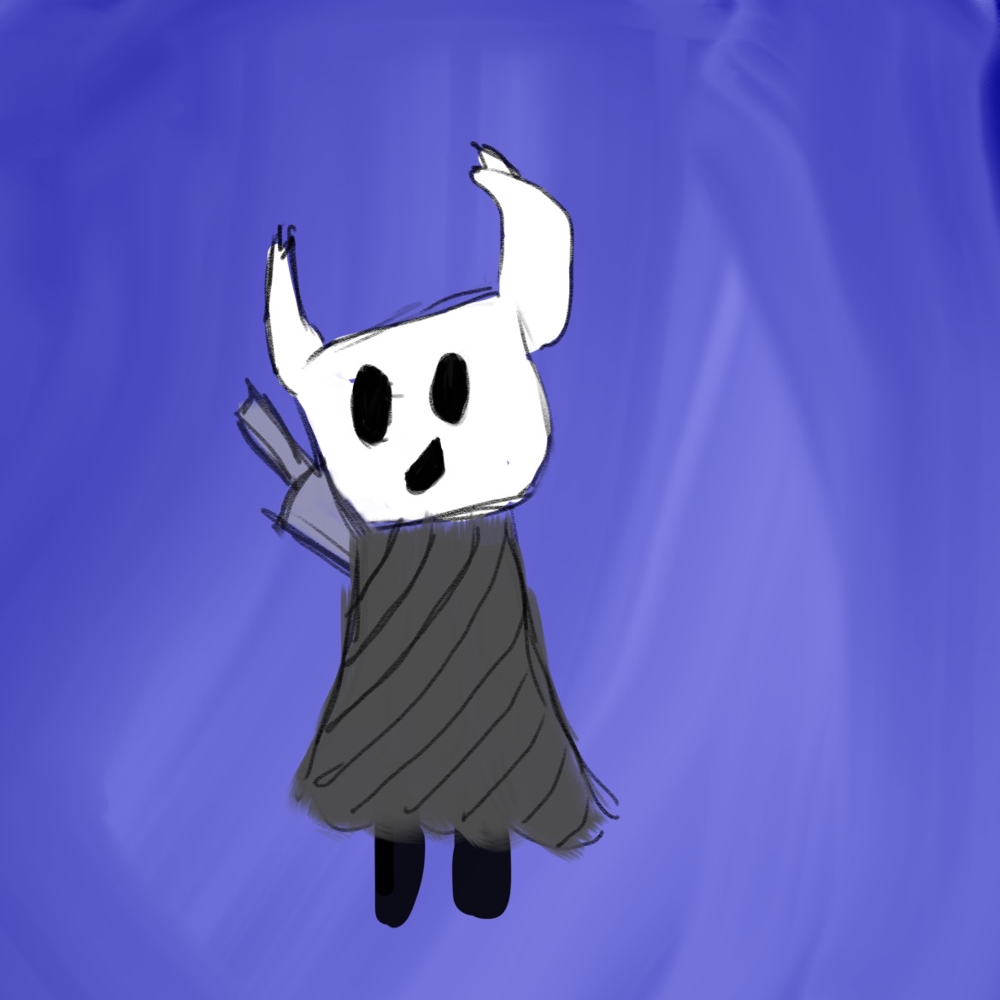

Obsidian Maker

Jonathan Boisclair Ph.D.
Streamer
Trois-Rivieres, QC, CA
March 14, 1995
Interests
Games Friends Minecraft Nintendo Friends Food Programming Design Art Photos

About me
I have a Ph.D. in mechanical engineering with speciality on autonomous vehicle perception. I stream variety games in my spare time to reduce stress.
You're welcome to participate in my chat and enjoy some time with me. But keep the chat safe. No personal information, no doxxing, no harassment. Be kind to everyone. I am not managing issues, if you cause one you're out, plain simple.
I am also the owner and developper of @hawkpigbot. And I own a programming company that makes websites and software. I do not do modding/hacking, don't ask.
PC Specifications
Intel(R) Core(TM) i7-9700K CPU @3.6Ghz
64GB Ram
1TB NVME + 4TB HDD
1000mbps internet
Windows 11 Pro 64-bit
Stream encoding:
Nvidia GTX 970
Game GPU:
Nvidia RTX3080